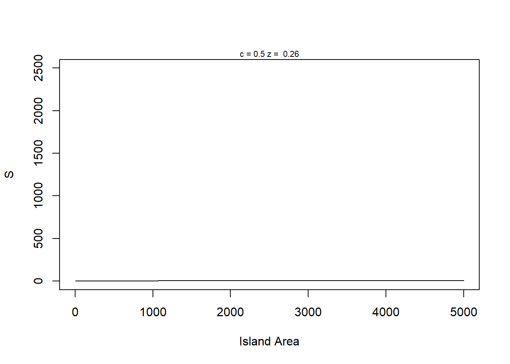

For Loops can be slow in R, especially when using functions like cbind in a loop R is a language that doesn’t need to rely on them too much So why do we use them? Comfort, ease of transfer to other languages, sometimes easier to read, and sometimes laziness
Good rule of thumb - Use i, j, or k for the var of loop This way, we know if we are using these counter variables, we know we are in a loop Common etiquette across other languages as well, like Java and Python
for (i in 1:5) { # initializes loop and will iterate 5 times
cat("stuck in a loop", "\n") # First will print/concatenate this line
cat(3 + 2, "\n") # then will do this arithmetic
cat(runif(1), "\n") # then will create a rand unif number
} # Loop will run 5 times, as we specified, before it is finished## stuck in a loop
## 5
## 0.5028801
## stuck in a loop
## 5
## 0.6269116
## stuck in a loop
## 5
## 0.1350145
## stuck in a loop
## 5
## 0.6696389
## stuck in a loop
## 5
## 0.5565729## [1] 1
## [1] 3
## [1] 6
## [1] 10
## [1] 15my_dogs <- c('chow', 'puggle', 'pug', 'st bernard', 'husky') # Creates vector of strings
for (i in 1:length(my_dogs)) { # i will iterate first slot of vector to end of vector
cat("i =", i, "my_dogs[i] =", my_dogs[i], "\n")
}## i = 1 my_dogs[i] = chow
## i = 2 my_dogs[i] = puggle
## i = 3 my_dogs[i] = pug
## i = 4 my_dogs[i] = st bernard
## i = 5 my_dogs[i] = huskymy_bad_dogs <- NULL
for (i in 1:length(my_bad_dogs)) {
cat("i =", i, "my_bad_dogs[i] =", my_bad_dogs[i], "\n")
} # Code has 2 print outs, because we declared it to run at 1, but NULL is = 0, so it counts back to 0## i = 1 my_bad_dogs[i] =
## i = 0 my_bad_dogs[i] =for (i in seq_along(my_dogs)) { #seq_along creates sequence following length of vector
cat("i =", i, "my_dogs[i] =", my_dogs[i], "\n")
}## i = 1 my_dogs[i] = chow
## i = 2 my_dogs[i] = puggle
## i = 3 my_dogs[i] = pug
## i = 4 my_dogs[i] = st bernard
## i = 5 my_dogs[i] = husky## i = 1 my_dogs[i] = chow
## i = 2 my_dogs[i] = puggle
## i = 3 my_dogs[i] = pug
## i = 4 my_dogs[i] = st bernard
## i = 5 my_dogs[i] = huskyfor (i in length(my_dogs)) {
my_dogs[i] <- toupper(my_dogs[i])
cat("i =", i, "my_dogs =", my_dogs[i], "\n")
}## i = 5 my_dogs = HUSKY## [1] "CHOW" "PUGGLE" "PUG" "ST BERNARD" "HUSKY"my_dat <- runif(1)
for (i in 2:10) {
temp <- runif(1)
my_dat <- c(my_dat, temp)
cat("loop number =", i, "vector_element =", my_dat[i], "\n")
}## loop number = 2 vector_element = 0.349832
## loop number = 3 vector_element = 0.4733299
## loop number = 4 vector_element = 0.08089804
## loop number = 5 vector_element = 0.4561452
## loop number = 6 vector_element = 0.2650024
## loop number = 7 vector_element = 0.6173027
## loop number = 8 vector_element = 0.5467498
## loop number = 9 vector_element = 0.6331127
## loop number = 10 vector_element = 0.4932429## [1] 10## [1] 3.2## [1] 1## [1] 3## [1] 2
## [1] 4
## [1] 6
## [1] 8
## [1] 10
## [1] 12
## [1] 14
## [1] 16
## [1] 18
## [1] 20## [1] 2
## [1] 4
## [1] 6
## [1] 8
## [1] 10
## [1] 12
## [1] 14
## [1] 16
## [1] 18
## [1] 20## [1] 10## [1] 1 3 5 7 9 11 13 15 17 19## [1] 10## [1] 2 4 6 8 10 12 14 16 18 20Using the break function now in for loops to stop loops Random walk example NWKM /20/2025
FUNCTION: ran_walk stochastic random walk input: times = number of time steps n1 = initial population size (= n[1]) lambda = finite rate of increase noise_sd = sd of a normal distribution with mean 0 output: vector n with population size > 0 until extinction, then NA
if lamda = 1.0, there will be no change in time step if lamda = 1.1, there will be a 10% increase each time step if lamda = 0.98, there will be a 2% decrease each time step
if lamda is > 1, we have a living organism
with stochastic, each time step can be up or down, but on average will be 0 due to normal distribution will keep track of what happens until we hit 0 in terms of real population, thats extinction <- this is where break comes into play ————————————————————————————
library(ggplot2)
ran_walk <- function(times=100,
n1=50,
lamda = 1.00,
noise_sd = 10) {
n <- rep(NA, times) # create output vector
n[1] <- n1 # initial population size
noise <- rnorm(n = times, mean = 0, sd = noise_sd) # create noise vector
# on average, noise should be 0 but some will be pos and some will be neg
for(i in 1:(times-1)) {
n[i+1] <- lamda*n[i] + noise[i]
if(n[i + 1] <= 0) {
n[i + 1] <- NA
cat("Population extinction at time", i+1, "\n")
break
}
}
return(n)
}
# Testing ran_walk() function
# This function is an example of something that needs to be done in a for-loop
# do we want stop instead of break?
ran_walk()## Population extinction at time 18## [1] 50.00000 55.02635 48.68178 42.52928 37.19796 30.70386 39.70569 24.27046
## [9] 27.13400 24.56143 29.31350 28.36519 34.61533 25.70124 23.62635 25.84784
## [17] 13.82831 NA NA NA NA NA NA NA
## [25] NA NA NA NA NA NA NA NA
## [33] NA NA NA NA NA NA NA NA
## [41] NA NA NA NA NA NA NA NA
## [49] NA NA NA NA NA NA NA NA
## [57] NA NA NA NA NA NA NA NA
## [65] NA NA NA NA NA NA NA NA
## [73] NA NA NA NA NA NA NA NA
## [81] NA NA NA NA NA NA NA NA
## [89] NA NA NA NA NA NA NA NA
## [97] NA NA NA NA## Warning: `qplot()` was deprecated in ggplot2 3.4.0.
## This warning is displayed once every 8 hours.
## Call `lifecycle::last_lifecycle_warnings()` to see where this warning was
## generated.## Population extinction at time 25## Warning: Removed 76 rows containing missing values or values outside the scale range
## (`geom_line()`).Checking our math, we see setting noise to 0 we get no change i.e. population stays stable
## [,1] [,2] [,3] [,4]
## [1,] 1.08 1.78 1.27 1.45
## [2,] 1.75 1.48 1.88 1.33
## [3,] 1.07 1.83 1.48 1.44
## [4,] 1.96 1.43 1.28 1.09
## [5,] 1.40 1.28 1.77 1.46## [,1] [,2] [,3] [,4]
## [1,] 2.08 2.78 2.27 2.45
## [2,] 2.75 2.48 2.88 2.33
## [3,] 2.07 2.83 2.48 2.44
## [4,] 2.96 2.43 2.28 2.09
## [5,] 2.40 2.28 2.77 2.46m <- matrix(round(runif(20), digits = 2), nrow =5)
for (i in 1:nrow(m)) {
for (k in 1:ncol(m)) {
m[i,j] <- m[i,j] + i + j # taking number and adding values to it
} # end of j loop
} # end of i loop
print(m)## [,1] [,2] [,3] [,4]
## [1,] 0.37 0.61 0.14 20.27
## [2,] 0.40 0.82 0.41 24.34
## [3,] 0.31 0.35 0.20 28.77
## [4,] 0.22 0.88 0.40 32.40
## [5,] 0.15 0.59 0.12 36.57# Function: Species area curve <- S = cA^z
# Creates power function relationship for S and A
# input: A is a vector of island areas
# c is the intercept constant
# z is the slope constant
# output: S is a vector of species richness values
#
#
# ----------------------------------------------------------
species_area_curve <- function(A=1:5000, c = 0.5, z = 0.26) {
S <- c*(A^z)
return(S)
}# function: species_area_plot
# plot species area curves with parameter values
# input: A = vector of areas
# c = single value for c parameter
# z = single value for z paremeter
#
# output: smoothed curve with parameters in graph
# -----------------------------------------------
# Also examples of using functions within functions
species_area_plot <- function(A=1:5000, c = 0.5, z = 0.26) {
plot(x = A, species_area_curve(A,c,z),
type = "l",
xlab = "Island Area",
ylab = "S",
ylim=c(0,2500))
mtext(paste("c =", c, "z = ", z), cex = 0.7) # This code will put z and c values on top of graphs when called
# return()
}
species_area_plot()
par(mfrow=c(3,4)) # mfrow calls to graphics display, unique to base R graphics
# This will be in a matrix structure and uses our previous function
for (i in seq_along(c_pars)) { # will jump over c_pars values
for (j in seq_along(z_pars)) { # will jump over z_pars values
species_area_plot(c=c_pars[i], z=z_pars[j]) # should in total make 12 passes through this and get a grid of 12 plots
}
}if z = NA OR z is greater than or equal to cut_point, which is 0.1 loop will continue to run loop will stop when z is less than the cut_point or is NA instead of printing out loop number, since we do not have one, we print out cycle_number Though, while loops are generally bad practice - for loops are generally better form Worst part of while loop - unsure if it will ever end - I.E. it could never meet criteria then go on forever - no good for example, if cut_point is something so low like 0.00001, it could run for a while, no pun intended
## [1] 0.08370573## [1] 29This function automatically sets up variables and pairs up unique combination of the two inputted values c_pars is 3, z_pars is 4, so it gives us a data frame of 12 unique combinations using c_pars and z_pars from earlier, lines 206 and 207
## Var1 Var2
## 1 100 0.10
## 2 150 0.10
## 3 175 0.10
## 4 100 0.16
## 5 150 0.16
## 6 175 0.16
## 7 100 0.26
## 8 150 0.26
## 9 175 0.26
## 10 100 0.30
## 11 150 0.30
## 12 175 0.30df <- expand.grid(x = c_pars, y = z_pars) # x can be replaced with column/variable name for first value, y can be replaced for second value and so on
# can be down with more than 2 values
df2 <- expand.grid(x = c_pars, y = z_pars, z = c_pars*2) # now 36 values, 3*4*3 = 36
df2## x y z
## 1 100 0.10 200
## 2 150 0.10 200
## 3 175 0.10 200
## 4 100 0.16 200
## 5 150 0.16 200
## 6 175 0.16 200
## 7 100 0.26 200
## 8 150 0.26 200
## 9 175 0.26 200
## 10 100 0.30 200
## 11 150 0.30 200
## 12 175 0.30 200
## 13 100 0.10 300
## 14 150 0.10 300
## 15 175 0.10 300
## 16 100 0.16 300
## 17 150 0.16 300
## 18 175 0.16 300
## 19 100 0.26 300
## 20 150 0.26 300
## 21 175 0.26 300
## 22 100 0.30 300
## 23 150 0.30 300
## 24 175 0.30 300
## 25 100 0.10 350
## 26 150 0.10 350
## 27 175 0.10 350
## 28 100 0.16 350
## 29 150 0.16 350
## 30 175 0.16 350
## 31 100 0.26 350
## 32 150 0.26 350
## 33 175 0.26 350
## 34 100 0.30 350
## 35 150 0.30 350
## 36 175 0.30 350## x y
## 1 100 0.10
## 2 150 0.10
## 3 175 0.10
## 4 100 0.16
## 5 150 0.16
## 6 175 0.16## 'data.frame': 12 obs. of 2 variables:
## $ x: num 100 150 175 100 150 175 100 150 175 100 ...
## $ y: num 0.1 0.1 0.1 0.16 0.16 0.16 0.26 0.26 0.26 0.3 ...
## - attr(*, "out.attrs")=List of 2
## ..$ dim : Named int [1:2] 3 4
## .. ..- attr(*, "names")= chr [1:2] "x" "y"
## ..$ dimnames:List of 2
## .. ..$ x: chr [1:3] "x=100" "x=150" "x=175"
## .. ..$ y: chr [1:4] "y=0.10" "y=0.16" "y=0.26" "y=0.30"## x y
## 1 100 0.10
## 2 150 0.10
## 3 175 0.10
## 4 100 0.16
## 5 150 0.16
## 6 175 0.16
## 7 100 0.26
## 8 150 0.26
## 9 175 0.26
## 10 100 0.30
## 11 150 0.30
## 12 175 0.30##################################################
# function: sa_output
# Summary stats for species-area power function
# input: vector of predicted species richness (right now random numeric value)
# output: list of max-min called sum_stats, coefficient of variation
#-------------------------------------------------
sa_output <- function(S=runif(10)) {
sum_stats <- list(s_gain=max(S)-min(S),s_cv=sd(S)/mean(S)) # list of first: max value of s - min of s,
# then taking the standard deviation of s divided by the mean of s for second list value
return(sum_stats)
}
sa_output() # list is 2 values## $s_gain
## [1] 0.6699767
##
## $s_cv
## [1] 0.4095386model_frame <- expand.grid(c=c_pars,z=z_pars)
model_frame$s_gain <- NA # adding column called s_gain with values NA
model_frame$s_cv <- NA # adding column called s_cv with values NA
print(model_frame)## c z s_gain s_cv
## 1 100 0.10 NA NA
## 2 150 0.10 NA NA
## 3 175 0.10 NA NA
## 4 100 0.16 NA NA
## 5 150 0.16 NA NA
## 6 175 0.16 NA NA
## 7 100 0.26 NA NA
## 8 150 0.26 NA NA
## 9 175 0.26 NA NA
## 10 100 0.30 NA NA
## 11 150 0.30 NA NA
## 12 175 0.30 NA NAfor (i in 1:nrow(model_frame)) {
# generate S vector
# calling upon species_area_curve from earlier and creating a temp value
# Using area vector from earlier which is 1 to 5000
# model_frame[i,1] will take row i, col 1, which is our c_par, c
# model_frame[i,2] will take row i, col 2, which is our z_par, z
temp1 <- species_area_curve(A=area,
c=model_frame[i,1],
z=model_frame[i,2])
# calculate output stats using our first temp value, creating a second temp value
# temp2 <- sa_output(temp1) < could use temp2 but uneccessary
# model_frame[i,c(3,4)] <- temp2
# temp 2 is a list, and then were passing this list into a model_frame which we need # to do since were passing in multiple columns into a data frame
# pass results to columns in data frame
model_frame[i,c(3,4)] <- sa_output(temp1)
}
print(model_frame)## c z s_gain s_cv
## 1 100 0.10 134.3673 0.09109192
## 2 150 0.10 201.5509 0.09109192
## 3 175 0.10 235.1428 0.09109192
## 4 100 0.16 290.6926 0.13905495
## 5 150 0.16 436.0389 0.13905495
## 6 175 0.16 508.7121 0.13905495
## 7 100 0.26 815.6557 0.21070232
## 8 150 0.26 1223.4835 0.21070232
## 9 175 0.26 1427.3975 0.21070232
## 10 100 0.30 1187.3333 0.23699746
## 11 150 0.30 1780.9999 0.23699746
## 12 175 0.30 2077.8333 0.23699746## c z A S
## 1 100 0.10 1 NA
## 2 150 0.10 1 NA
## 3 175 0.10 1 NA
## 4 100 0.16 1 NA
## 5 150 0.16 1 NA
## 6 175 0.16 1 NA
## 7 100 0.26 1 NA
## 8 150 0.26 1 NA
## 9 175 0.26 1 NA
## 10 100 0.30 1 NA
## 11 150 0.30 1 NA
## 12 175 0.30 1 NA
## 13 100 0.10 2 NA
## 14 150 0.10 2 NA
## 15 175 0.10 2 NA
## 16 100 0.16 2 NA
## 17 150 0.16 2 NA
## 18 175 0.16 2 NA
## 19 100 0.26 2 NA
## 20 150 0.26 2 NA
## 21 175 0.26 2 NA
## 22 100 0.30 2 NA
## 23 150 0.30 2 NA
## 24 175 0.30 2 NA
## 25 100 0.10 3 NA
## 26 150 0.10 3 NA
## 27 175 0.10 3 NA
## 28 100 0.16 3 NA
## 29 150 0.16 3 NA
## 30 175 0.16 3 NA
## 31 100 0.26 3 NA
## 32 150 0.26 3 NA
## 33 175 0.26 3 NA
## 34 100 0.30 3 NA
## 35 150 0.30 3 NA
## 36 175 0.30 3 NA
## 37 100 0.10 4 NA
## 38 150 0.10 4 NA
## 39 175 0.10 4 NA
## 40 100 0.16 4 NA
## 41 150 0.16 4 NA
## 42 175 0.16 4 NA
## 43 100 0.26 4 NA
## 44 150 0.26 4 NA
## 45 175 0.26 4 NA
## 46 100 0.30 4 NA
## 47 150 0.30 4 NA
## 48 175 0.30 4 NA
## 49 100 0.10 5 NA
## 50 150 0.10 5 NA
## 51 175 0.10 5 NA
## 52 100 0.16 5 NA
## 53 150 0.16 5 NA
## 54 175 0.16 5 NA
## 55 100 0.26 5 NA
## 56 150 0.26 5 NA
## 57 175 0.26 5 NA
## 58 100 0.30 5 NA
## 59 150 0.30 5 NA
## 60 175 0.30 5 NAfor (i in 1:length(c_pars)) {
for (j in 1:length(z_pars)) {
model_frame[model_frame$c==c_pars[i] & model_frame$z==z_pars[j],"S"] <- species_area_curve(A=area,c=c_pars[i],z=z_pars[j])
}
}
model_frame## c z A S
## 1 100 0.10 1 100.0000
## 2 150 0.10 1 150.0000
## 3 175 0.10 1 175.0000
## 4 100 0.16 1 100.0000
## 5 150 0.16 1 150.0000
## 6 175 0.16 1 175.0000
## 7 100 0.26 1 100.0000
## 8 150 0.26 1 150.0000
## 9 175 0.26 1 175.0000
## 10 100 0.30 1 100.0000
## 11 150 0.30 1 150.0000
## 12 175 0.30 1 175.0000
## 13 100 0.10 2 107.1773
## 14 150 0.10 2 160.7660
## 15 175 0.10 2 187.5604
## 16 100 0.16 2 111.7287
## 17 150 0.16 2 167.5931
## 18 175 0.16 2 195.5252
## 19 100 0.26 2 119.7479
## 20 150 0.26 2 179.6218
## 21 175 0.26 2 209.5588
## 22 100 0.30 2 123.1144
## 23 150 0.30 2 184.6717
## 24 175 0.30 2 215.4503
## 25 100 0.10 3 111.6123
## 26 150 0.10 3 167.4185
## 27 175 0.10 3 195.3216
## 28 100 0.16 3 119.2173
## 29 150 0.16 3 178.8260
## 30 175 0.16 3 208.6303
## 31 100 0.26 3 133.0612
## 32 150 0.26 3 199.5918
## 33 175 0.26 3 232.8571
## 34 100 0.30 3 139.0389
## 35 150 0.30 3 208.5584
## 36 175 0.30 3 243.3181
## 37 100 0.10 4 114.8698
## 38 150 0.10 4 172.3048
## 39 175 0.10 4 201.0222
## 40 100 0.16 4 124.8331
## 41 150 0.16 4 187.2496
## 42 175 0.16 4 218.4578
## 43 100 0.26 4 143.3955
## 44 150 0.26 4 215.0933
## 45 175 0.26 4 250.9422
## 46 100 0.30 4 151.5717
## 47 150 0.30 4 227.3575
## 48 175 0.30 4 265.2504
## 49 100 0.10 5 117.4619
## 50 150 0.10 5 176.1928
## 51 175 0.10 5 205.5583
## 52 100 0.16 5 129.3705
## 53 150 0.16 5 194.0557
## 54 175 0.16 5 226.3983
## 55 100 0.26 5 151.9610
## 56 150 0.26 5 227.9415
## 57 175 0.26 5 265.9318
## 58 100 0.30 5 162.0657
## 59 150 0.30 5 243.0985
## 60 175 0.30 5 283.6149for (i in 1:nrow(model_frame)) {
model_frame[i,"S"] <- species_area_curve(A=model_frame$A[i],
c=model_frame$c[i],
z=model_frame$z[i])
}
print(model_frame) # check by printing a data frame with limited parameter values## c z A S
## 1 100 0.10 1 100.0000
## 2 150 0.10 1 150.0000
## 3 175 0.10 1 175.0000
## 4 100 0.16 1 100.0000
## 5 150 0.16 1 150.0000
## 6 175 0.16 1 175.0000
## 7 100 0.26 1 100.0000
## 8 150 0.26 1 150.0000
## 9 175 0.26 1 175.0000
## 10 100 0.30 1 100.0000
## 11 150 0.30 1 150.0000
## 12 175 0.30 1 175.0000
## 13 100 0.10 2 107.1773
## 14 150 0.10 2 160.7660
## 15 175 0.10 2 187.5604
## 16 100 0.16 2 111.7287
## 17 150 0.16 2 167.5931
## 18 175 0.16 2 195.5252
## 19 100 0.26 2 119.7479
## 20 150 0.26 2 179.6218
## 21 175 0.26 2 209.5588
## 22 100 0.30 2 123.1144
## 23 150 0.30 2 184.6717
## 24 175 0.30 2 215.4503
## 25 100 0.10 3 111.6123
## 26 150 0.10 3 167.4185
## 27 175 0.10 3 195.3216
## 28 100 0.16 3 119.2173
## 29 150 0.16 3 178.8260
## 30 175 0.16 3 208.6303
## 31 100 0.26 3 133.0612
## 32 150 0.26 3 199.5918
## 33 175 0.26 3 232.8571
## 34 100 0.30 3 139.0389
## 35 150 0.30 3 208.5584
## 36 175 0.30 3 243.3181
## 37 100 0.10 4 114.8698
## 38 150 0.10 4 172.3048
## 39 175 0.10 4 201.0222
## 40 100 0.16 4 124.8331
## 41 150 0.16 4 187.2496
## 42 175 0.16 4 218.4578
## 43 100 0.26 4 143.3955
## 44 150 0.26 4 215.0933
## 45 175 0.26 4 250.9422
## 46 100 0.30 4 151.5717
## 47 150 0.30 4 227.3575
## 48 175 0.30 4 265.2504
## 49 100 0.10 5 117.4619
## 50 150 0.10 5 176.1928
## 51 175 0.10 5 205.5583
## 52 100 0.16 5 129.3705
## 53 150 0.16 5 194.0557
## 54 175 0.16 5 226.3983
## 55 100 0.26 5 151.9610
## 56 150 0.26 5 227.9415
## 57 175 0.26 5 265.9318
## 58 100 0.30 5 162.0657
## 59 150 0.30 5 243.0985
## 60 175 0.30 5 283.6149